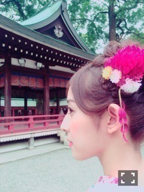

| 2016/07 12 Tue | 斎藤ちはる 真摯に。 |
ちはるーむへようこそ。
たくさんのコメント、本当にありがとうございました。
色々な思いが心に沁みて、胸が熱くなりました。
コメントには、
自分らしく頑張れと言ってくださった方、
自分も頑張るから一緒に頑張ろうと言ってくださった方、
これからも応援するよと言ってくださった方。
励ましてくれるものもありつつ、
そんな事をファンに聞く意味が分からない、何を考えてるの？等々、厳しい意見もたくさんいただきました。
様々な意見を真摯に受け止めたいと思います。
今の立場などを考えて正直、弱気になっていました。
今回のブログが結果的に良いのか悪いのかは分かりませんが、皆さんの貴重な意見を聞けて私は良かったと思っています。
ご存知の方もいると思いますが
私の「ちはる」という名前。
漢字にしたら「千春」
「春」は幸せの季節。
そんな幸せを「千人」の方へ。
いや、「千年」先も人を幸せに出来るような
人になってほしいという想いから名付けられました。
人を幸せにしてほしいと願われた子が
いま、アイドルになっています。
人を笑顔にすることの出来るアイドルに。
だからこの名前の通り
人に幸せにすることのできる、
人を笑顔にできる人間になりたいと改めて思います。
皆さんに笑顔になってほしい。
皆さんの笑顔が見れる事が私の幸せです。
私は不器用です。
弱い部分も山ほどあります。
ですが、アイドルとして、1人の人間として前へ進んでいきます！
私は諦めたくありません。
かっこ悪くても最後までがむしゃらに挑んでいきます。
自分と向き合って、
自分を見つめながら。
でも、時にはこうして背中を押してほしい。
いつも応援をありがとうございます。
皆さんがいたから私は頑張れるし
皆さんがいるからこれからも頑張っていこうと思います。
そして最後にコメントしてくださった皆さん
本当にありがとうございました。
しっかり胸に刻んでいきます。
-------------------------♡
よし、こんな暗いブログはもう見たくないと思うので
明日からはいつものちはるーむに戻ります\( ˆ ˆ )/
毎日のブログ続けてね！って声が多かったので
これからも続けていきますね！

いつもありがとう。
斎藤ちはる